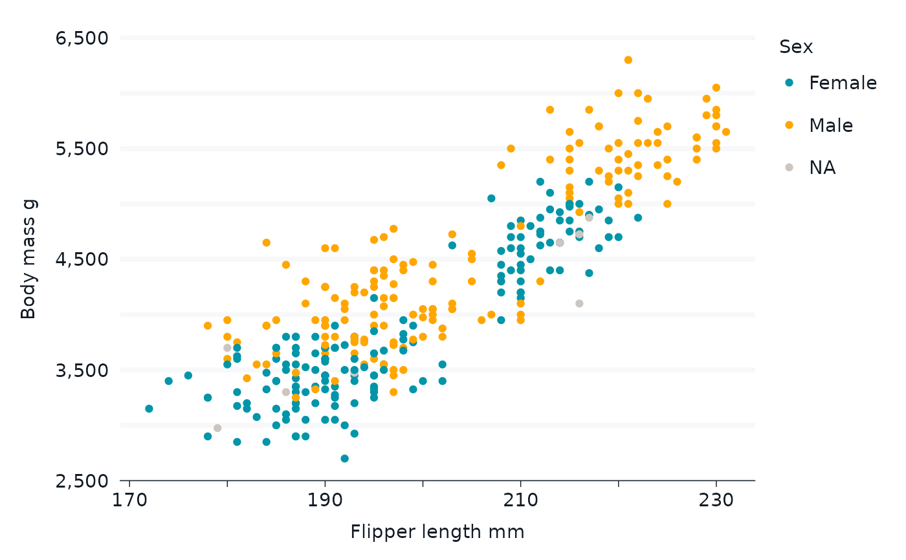

Label every nth element in a vector, and replace the rest with "".
Arguments
- n
The increment of elements to hold as is. Defaults to
2.- offset
An offset for which element to first hold. Defaults to
0. Possible values are-1to (n - 2)- ...
If numeric, arguments passed to the
scales::commafunction. Otherwise, arguments passed toformat.
Examples
label_every_nth()(scales::comma(seq(1000, 5000, 1000)))
#> [1] "1,000" "" "3,000" "" "5,000"
label_every_nth()(lubridate::ymd(c("2021-01-01", "2022-01-01", "2023-01-01", "2024-01-01")))
#> [1] "2021-01-01" "" "2023-01-01" ""
label_every_nth()(LETTERS[1:12])
#> [1] "A" "" "C" "" "E" "" "G" "" "I" "" "K" ""
library(dplyr)
library(palmerpenguins)
set_blanket()
penguins |>
mutate(across(sex, \(x) stringr::str_to_sentence(x))) |>
gg_point(
x = flipper_length_mm,
y = body_mass_g,
col = sex,
x_labels = label_every_nth(),
y_labels = label_every_nth(),
)
#> Scale for colour is already present.
#> Adding another scale for colour, which will replace the existing scale.
#> Warning: Removed 2 rows containing missing values or values outside the scale range
#> (`geom_point()`).
